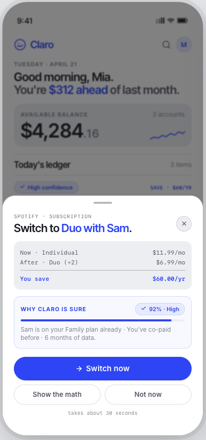
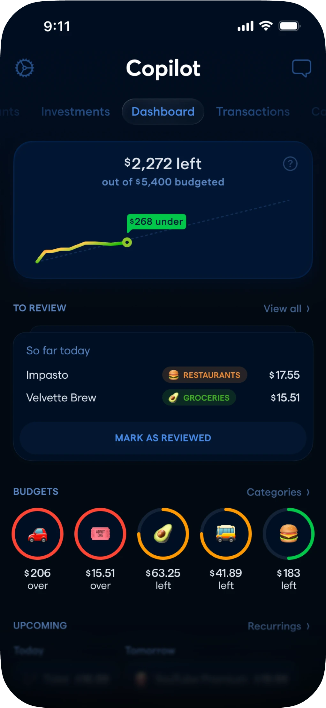
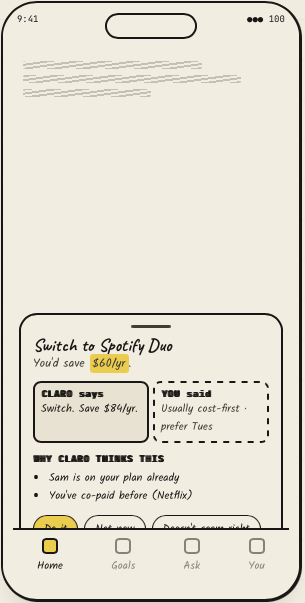
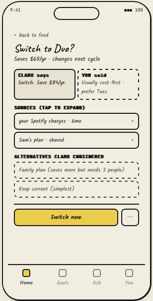
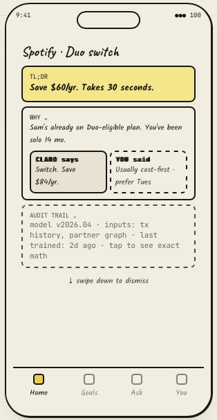
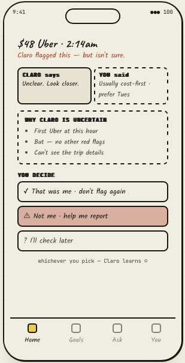

No trust in Claro's suggestions

To validate this, we looked at the funnel and some supporting data.
To dig deeper, we ran some user interviews.


We spoke with some of our data engineers and found that the "Why?" already exists.
Hence we can start looking into how competitors are handling reasoning and confidence signals.



We explore ways Claro can gain trust
We try to balance between showing too much data on recommendations vs not showing any data at all.
We picked 2 of the 12 generated options below.




Hi-Fi Designs
I asked Claude to design the screens.
Below are the AI-gen options.
Then I exported them to Figma.
What I've improved.
User testing
Test whether users can read, understand, and act on a Claro recommendation without any help.
Most users understood the recommendation and took action.
What I'd do differently
Here's what I'd go back and fix.